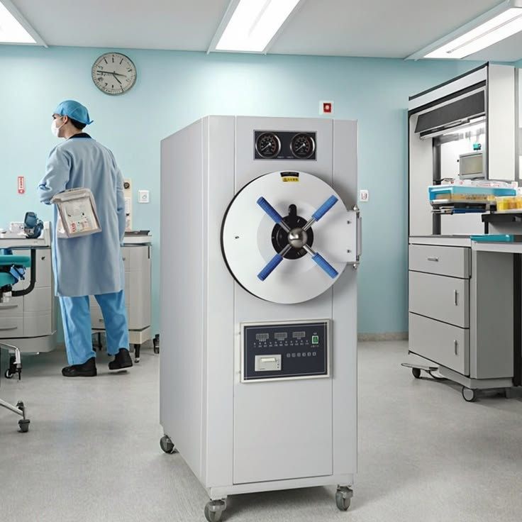
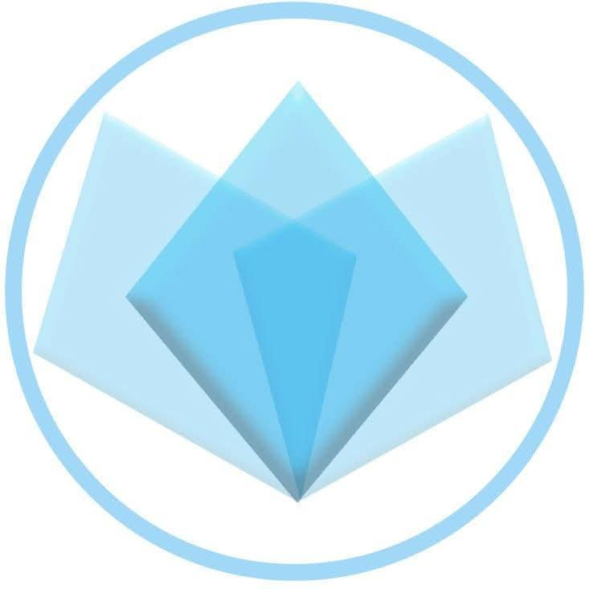

Equipos que atendemos




Soluciones profesionales para mantenimiento, diagnóstico y reparación de equipos médicos.
Solicitar DiagnósticoCentrífugas, analizadores hematológicos, bioquímicos, incubadoras y espectrofotómetros.
Monitores de paciente, ventiladores, desfibriladores, bombas de infusión.
Unidades dentales, autoclaves, ultrasonidos y compresores.
Reparación electrónica y calibración de sensores médicos.

Entre 6 y 12 meses dependiendo del equipo.
Sí, ofrecemos atención rápida.
Sí, calibración de sensores biomédicos.
Atención en Cochabamba y alrededores
Contactar por WhatsApp